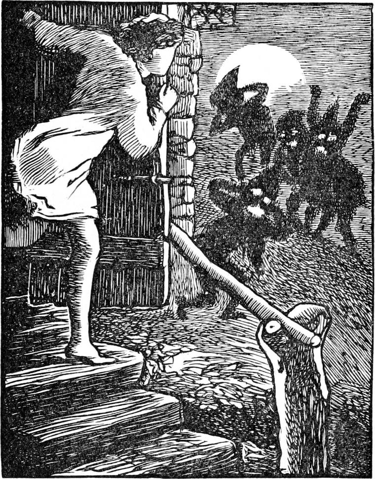
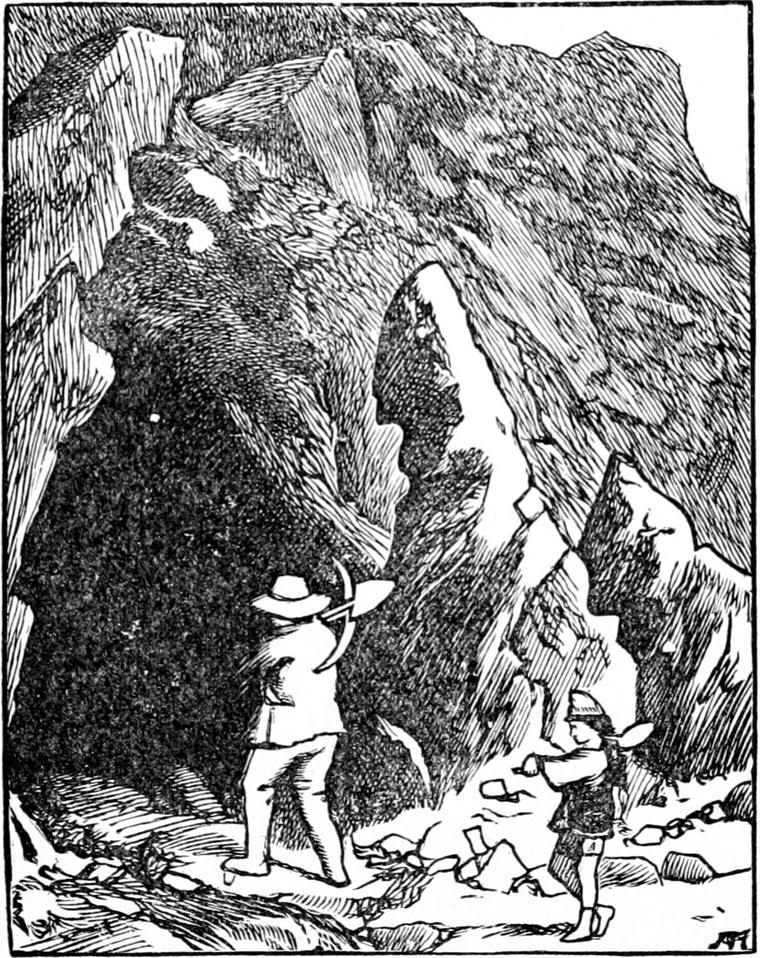

Curdie went home whistling. He resolved to say nothing about the princess for fear of getting the nurse into trouble, for while he enjoyed teasing her because of her absurdity, he was careful not to do her any harm. He saw no more of the goblins, and was soon fast asleep in his bed.
He woke in the middle of the night, and thought he heard curious noises outside. He sat up and listened; then got up, and, opening the door very quietly, went out. When he peeped round the corner, he saw, under his own window, a group of stumpy creatures, whom he at once recognized by their shape. Hardly, however, had he begun his 'One, two, three!' when they broke asunder, scurried away, and were out of sight. He returned laughing, got into bed again, and was fast asleep in a moment.

Reflecting a little over the matter in the morning, he came to the conclusion that, as nothing of the kind had ever happened before, they must be annoyed with him for interfering to protect the princess. By the time he was dressed, however, he was thinking of something quite different, for he did not value the enmity of the goblins in the least. As soon as they had had breakfast, he set off with his father for the mine.
They entered the hill by a natural opening under a huge rock, where a little stream rushed out. They followed its course for a few yards, when the passage took a turn, and sloped steeply into the heart of the hill. With many angles and windings and branchings-off, and sometimes with steps where it came upon a natural gulf, it led them deep into the hill before they arrived at the place where they were at present digging out the precious ore. This was of various kinds, for the mountain was very rich in the better sorts of metals. With flint and steel, and tinder-box, they lighted their lamps, then fixed them on their heads, and were soon hard at work with their pickaxes and shovels and hammers. Father and son were at work near each other, but not in the same gang—the passages out of which the ore was dug, they called gangs—for when the lode, or vein of ore, was small, one miner would have to dig away alone in a passage no bigger than gave him just room to work—sometimes in uncomfortable cramped positions. If they stopped for a moment they could hear everywhere around them, some nearer, some farther off, the sounds of their companions burrowing away in all directions in the inside of the great mountain—some boring holes in the rock in order to blow it up with gunpowder, others shovelling the broken ore into baskets to be carried to the mouth of the mine, others hitting away with their pickaxes. Sometimes, if the miner was in a very lonely part, he would hear only a tap-tapping, no louder than that of a woodpecker, for the sound would come from a great distance off through the solid mountain rock.

The work was hard at best, for it is very warm underground; but it was not particularly unpleasant, and some of the miners, when they wanted to earn a little more money for a particular purpose, would stop behind the rest and work all night. But you could not tell night from day down there, except from feeling tired and sleepy; for no light of the sun ever came into those gloomy regions. Some who had thus remained behind during the night, although certain there were none of their companions at work, would declare the next morning that they heard, every time they halted for a moment to take breath, a tap-tapping all about them, as if the mountain were then more full of miners than ever it was during the day; and some in consequence would never stay overnight, for all knew those were the sounds of the goblins. They worked only at night, for the miners' night was the goblins' day. Indeed, the greater number of the miners were afraid of the goblins; for there were strange stories well known amongst them of the treatment some had received whom the goblins had surprised at their work during the night. The more courageous of them, however, amongst them Peter Peterson and Curdie, who in this took after his father, had stayed in the mine all night again and again, and although they had several times encountered a few stray goblins, had never yet failed in driving them away. As I have indicated already, the chief defence against them was verse, for they hated verse of every kind, and some kinds they could not endure at all. I suspect they could not make any themselves, and that was why they disliked it so much. At all events, those who were most afraid of them were those who could neither make verses themselves nor remember the verses that other people made for them; while those who were never afraid were those who could make verses for themselves; for although there were certain old rhymes which were very effectual, yet it was well known that a new rhyme, if of the right sort, was even more distasteful to them, and therefore more effectual in putting them to flight.
Perhaps my readers may be wondering what the goblins could be about, working all night long, seeing they never carried up the ore and sold it; but when I have informed them concerning what Curdie learned the very next night, they will be able to understand.
For Curdie had determined, if his father would permit him, to remain there alone this night—and that for two reasons: first, he wanted to get extra wages that he might buy a very warm red petticoat for his mother, who had begun to complain of the cold of the mountain air sooner than usual this autumn; and second, he had just a faint hope of finding out what the goblins were about under his window the night before.
When he told his father, he made no objection, for he had great confidence in his boy's courage and resources.
'I'm sorry I can't stay with you,' said Peter; 'but I want to go and pay the parson a visit this evening, and besides I've had a bit of a headache all day.'
'I'm sorry for that, father,' said Curdie.
'Oh, it's not much. You'll be sure to take care of yourself, won't you?'
'Yes, father; I will. I'll keep a sharp look-out, I promise you.' Curdie was the only one who remained in the mine. About six o'clock the rest went away, everyone bidding him good night, and telling him to take care of himself; for he was a great favourite with them all.
'Don't forget your rhymes,' said one.
'No, no,' answered Curdie.
'It's no matter if he does,' said another, 'for he'll only have to make a new one.'
'Yes: but he mightn't be able to make it fast enough,' said another; 'and while it was cooking in his head, they might take a mean advantage and set upon him.'
'I'll do my best,' said Curdie. 'I'm not afraid.'
'We all know that,' they returned, and left him.